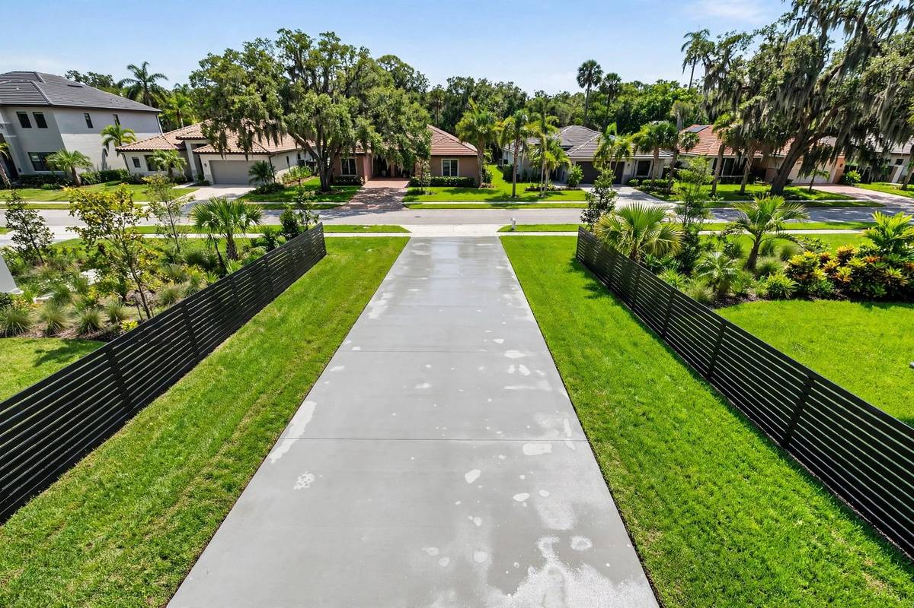

Dirt & Grime
Foot traffic and outdoor exposure leave dirt and grime across sidewalks and patios. Controlled cleaning lifts visible surface buildup away.
Jacksonville, FL Outdoor Cleaning
Careful cleaning for sidewalks, patios, porches and walkways — matched to the surface, not one-size-fits-all.
7-Day Satisfaction Check • Reply within 24 hours
Professional Sidewalk & Patio Cleaning
Sidewalks, patios, porches and outdoor walkways face rain, humidity, sunlight, pollen, leaves and everyday foot traffic. Over time, that leaves outdoor surfaces looking dirty, dull, or affected by algae, mildew and organic buildup.
Our sidewalk and patio cleaning removes visible dirt, grime, algae, mildew, pollen and weather-related buildup from suitable outdoor surfaces. We consider the material and condition of each surface before selecting the right method — more pressure does not automatically mean better cleaning.



What’s on Your Sidewalk & Patio?
Jacksonville’s rain, shade and foot traffic leave their mark on outdoor surfaces. Here is what we see most.
Foot traffic and outdoor exposure leave dirt and grime across sidewalks and patios. Controlled cleaning lifts visible surface buildup away.
Moisture and shade help algae and mildew grow on outdoor surfaces. A cleaning treatment loosens them so they rinse off.
Pollen, leaves and grass settle on sidewalks, patios, porches and walkways. Regular cleaning keeps them from building up.
Dark or uneven areas are often linked to dirt, algae, mildew or other buildup. We check the cause first, then choose the right approach.
Outdoor Surfaces
Every surface gets the method that suits it. Here is what your sidewalk and patio cleaning can cover.
Residential sidewalks build up dirt, grime, algae, mildew, pollen and organic debris. Controlled cleaning helps keep your walkway looking clean.
Concrete patios develop dirt, algae, mildew and weather-related buildup. We check the surface first to choose the right method.
Porches, front entry areas and paths to your home collect dirt, pollen, leaves and outdoor residue.
Poolside walkways face moisture, sunlight, organic debris and regular foot traffic. We clean them with care around the pool area.
Other outdoor walking or living surfaces may also be cleaned, based on material, condition, access and buildup.
Careful Surface Cleaning
Algae and mildew can make a walkway look slippery and poorly maintained, especially in shaded areas and near sprinklers. Cleaning removes the visible growth and refreshes the surface.
Organic growth builds up fastest where moisture lingers — under trees, along shaded paths, and where sprinklers hit the concrete.
Our Process
Five careful steps, every time. No shortcuts, no guesswork on your outdoor surfaces.
We identify the surface material, condition, visible buildup and areas needing special attention.
We consider dirt, grime, algae, mildew, pollen, organic debris and weather-related residue.
Outdoor furniture, decorations and movable items are cleared or protected where suitable.
When suitable, a cleaning treatment helps loosen dirt and organic buildup before cleaning.
The surface is cleaned, rinsed and inspected using a method based on its material and condition.
The Right Method Matters
Outdoor surfaces look tough, but they are not all the same. The right pressure depends on the surface in front of us.
Older, worn, cracked, painted or previously damaged surfaces may need additional consideration before cleaning.
Concrete, pavers and other outdoor materials have different cleaning requirements. The method should fit the specific surface.
Excessive pressure may affect certain surfaces or disturb surrounding materials. More pressure does not automatically mean better cleaning.
We take care around edges, joints, landscaping, pool areas, drains and other outdoor features.
Why Clean Your Sidewalk & Patio?
Periodic cleaning is part of an exterior care routine for sidewalks, patios, porches and walkways.
Cleaning suitable patios and outdoor areas can be part of routine exterior care when visible buildup develops.
Patios, porches and walkways used for relaxing and entertaining look fresher and more maintained after cleaning.
Sidewalk and patio cleaning can complement other exterior services when several outdoor surfaces around a property need attention.
Your walkway and entry are the first things guests see. A clean path makes the whole home look cared for.
Local Properties
Every property is different. Here is how sidewalk and patio cleaning fits different kinds of Jacksonville properties.
Residential sidewalks, patios, porches and entry paths can collect dirt, pollen, algae and outdoor buildup.
Townhome properties may have individual walkways, patios, porches or shared areas needing suitable cleaning.
Cleaning visible buildup from suitable outdoor areas can be part of routine rental property care.
Property owners may include outdoor surface cleaning as part of broader exterior upkeep.
Patios, porches and outdoor walkways used for relaxing and entertaining can benefit from periodic cleaning.
Get a free sidewalk and patio cleaning quote — we reply within 24 hours.
Pro Tip
Planning outdoor gatherings? Clean your patio and walkways first. Fresh, clean outdoor surfaces make the whole yard feel ready — and it is easier to enjoy your patio when the paths around it look their best.
Where We Work
We clean sidewalks and patios across Jacksonville and nearby communities. Find your area below.
Before We Arrive
A few small steps before we arrive help the wash go smoothly.
Sidewalk & Patio FAQs
There is no universal schedule. Weather exposure, moisture, shade, foot traffic, surrounding vegetation, and visible buildup can affect how often cleaning is needed.
Professional cleaning can address visible algae and mildew on suitable sidewalk surfaces. Results can vary based on the type and extent of the buildup.
Yes, suitable concrete patios can be cleaned using an approach based on the surface condition and type of buildup.
Improper pressure or cleaning technique may affect some patio surfaces. The material and condition should be checked first.
Suitable porches, front entry areas, and walkways can be cleaned based on their material and condition.
Suitable walkways and outdoor surfaces around a pool can be cleaned while considering the surrounding pool area and nearby features.
No cleaning method can guarantee removal of every stain. Results depend on the type, age, depth, and condition of the stain.
Not necessarily, based on the property and access arrangements. It is helpful to discuss access requirements before service begins.
Working hours are Monday to Friday, 9:00 AM to 4:00 PM Eastern Time. 7-Day Satisfaction Check: if a spot remains within 7 days, we will re-clean that spot free. We reply to estimate requests within 24 hours.
More Exterior Cleaning
One visit can cover more than the walkway. See our other Jacksonville cleaning services.
Ready to give your sidewalks, patios and walkways a cleaner, more maintained look? Tell us about your outdoor areas and we will check the surfaces and the right cleaning approach.
7-Day Satisfaction Check: if a spot remains within 7 days, we will re-clean that spot free.
Working hours: Monday to Friday, 9:00 AM to 4:00 PM Eastern Time.